Die Akte kann über den Menüpunkt…
1 WinLine INFO
1 Info
1 Akte
… oder über die diversen Info-Fenster (Konten-Info, Artikel-Info, Projekt-Info etc.) aufgerufen werden.
Dieser Menüpunkt ermöglicht in einigen Bewegungsdaten nach vorgegebenen Stammdaten zu suchen.
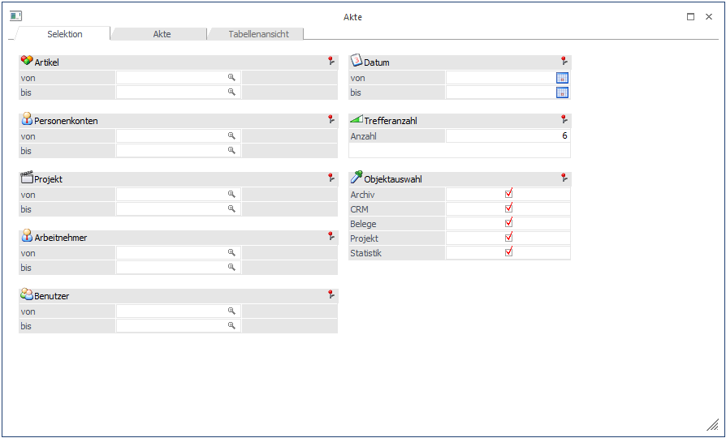
Ø Artikelnummer
Eingrenzung der Suche auf den bzw. die Artikel/n
Ø Personenkonten
Eingrenzung der Suche nach der Kontonummer
Ø Datum
Eingrenzung nach welchem Datum ausgegeben werden soll
Ø Projekt
Eingabe der Projektnummer nach der selektiert werden soll
Ø Arbeitnehmer
Eingrenzung der Suche auf Arbeitnehmer
Ø Trefferanzahl
Die Anzahl der Treffer können hier manuell eingeschränkt werden.
Ø Benutzer
Eingabe des Benutzers
Objektauswahl
Bei der Objektauswahl kann gewählt werden nach welchen Bewegungsdaten gesucht werden soll. Diese sind:
ü Archiv
ü CRM
ü Belege
ü Projekt und
ü Statistik
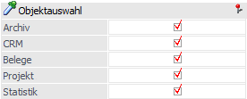
In der Registerkarte "Akte" werden im Auswahl-Feld alle Treffer angezeigt.
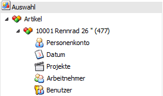
Hinweis
Bei der Objektauswahl "Belege" werden nur nach den Kopf-Zeilen gesucht!
Sub-Auswahl
In der Sub-Auswahl sieht man sofort, wie viele Treffer man pro Objekt hat.
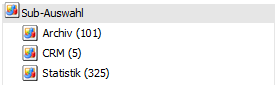
Trefferansicht
Wurde auf die Sub-Auswahl geklickt, erhält man in der Trefferansicht die ersten 100 gefundenen Einträge.
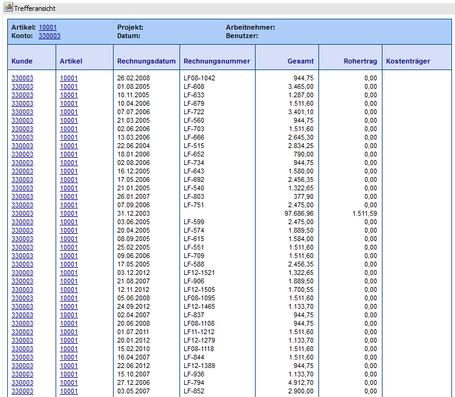
Buttons
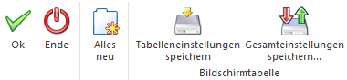
Ø Ok
Mit dem OK-Button werden sofort alle Treffer im Auswahl-Feld angezeigt.
Ø Ende
Mit dem Ende-Button verlässt man den Menüpunkt.
Ø Alles Neu
Der Neu-Button löscht alle Selektion bzw. Kriterien nach dem vorher gesucht worden ist. Somit kann eine neue Abfrage bzw. Suchaktion gestartet werden.
Ø Tabelleneinstellungen speichern
Die Spalten einer Tabelle können grundsätzlich an beliebige Positionen verschoben, bzw. in der Breite entsprechend angepasst werden. Durch Anwahl des Buttons "Tabelleneinstellungen speichern" werden die Einstellungen benutzerspezifisch gespeichert und bei dem nächsten Aufruf des Programmpunktes wieder vorgeschlagen.
Ø Gesamteinstellungen speichern
Im Gegensatz zu "Tabelleneinstellungen speichern" können mit "Gesamteinstellungen speichern" mehrere Tabellenaufbauten gespeichert und nach Wunsch geladen werden. Zusätzlich werden Sonderfunktionen der Tabelle (z.B. "Spalte gruppieren") ebenfalls bei der Speicherung bedacht.
Beispiel
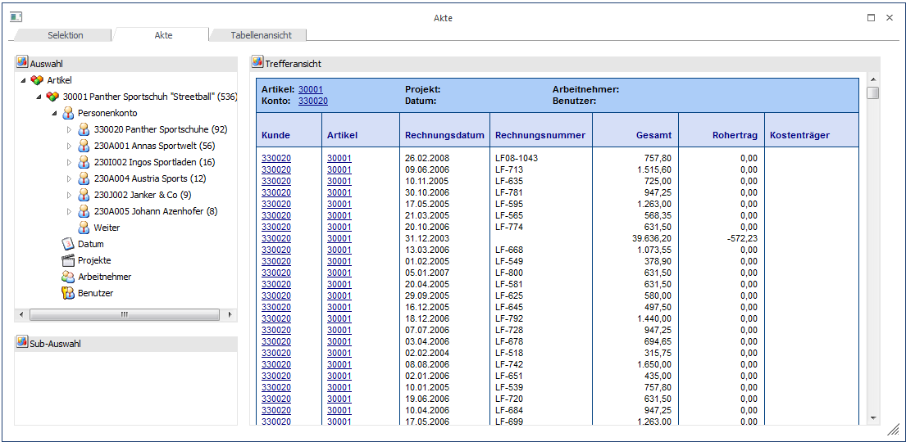
Grenzt man z.B.: auf den Artikel 30001 ein, erhält man alle Objekte, wo der Artikel 30001 mitgespielt hat (das kann nun ein Archiveintrag, ein CRM-Eintrag, eine Statistikzeile oder ein Projekt sein, da in der Objektauswahl Belege nur nach den Kopfdaten gesucht wird).
In der Auswahl sieht man auch gleich, wie viele Treffer man mit dem Artikel in Summe gelandet hat. Dies ist in der Klammer hinter der Artikelnummer erkenntlich.
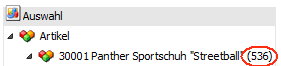
Im Feld Sub-Auswahl sieht man auch sofort, wie viele Treffer man pro Objekt hat.
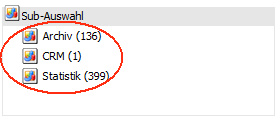
Nun kann man im Auswahlbaum weiter eingrenzen - z.B. durch einen Klick auf das Datum. Sofort werden die Treffer nach Monat sortiert angezeigt - wobei hier die Reihung nach der höchsten Trefferanzahl erfolgt. Man erhält nun dieselbe Ansicht wie beim Artikel - nur nach Monat sortiert (inkl. Trefferanzeige).
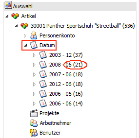
Und auch hier kann man wieder die Trefferauswahl weiter verfeinern.
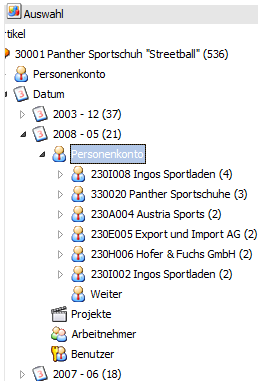
Klickt man am Ende auf das Feld Sub-Auswahl z.B. auf den Ast "Archiv", erhält man in der darunterliegenden Trefferansicht die ersten 100 gefundenen Einträge.
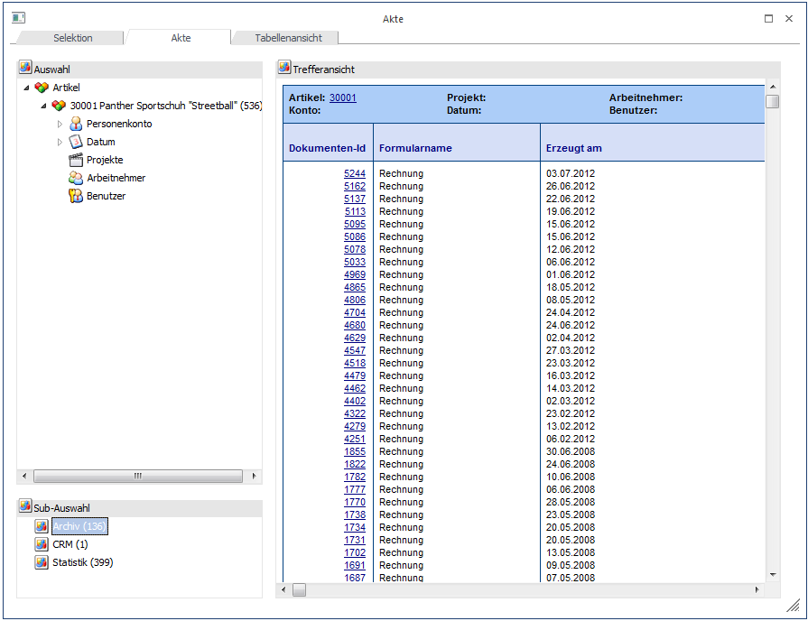